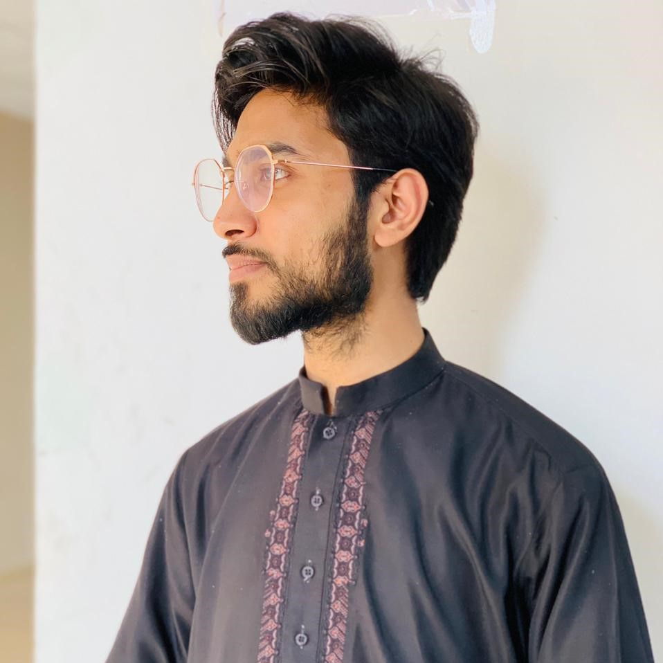

Hi, I'm Faisal
Graphic Designer At EVIL CORP
Passionate
to craft unique and
innovative design.
a design enthusiast that already have freelancing experience as UI/ UX Designer and(currently) web designer,in addition to web design, I'm currently learning no-code web development tools such as Webflow.